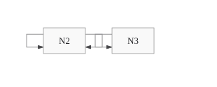
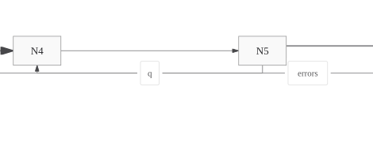
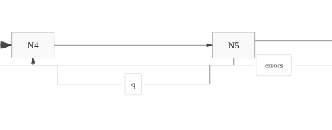

Separate route ownership; certify sparse ER paint
Agentic Mermaid #580 · before da71287d · current 53319dbb976dae1865e19f7faca49464ee8e8557
2,800 route cases: zero findings, hard issues or semantic changes. Sparse ER: 24 supported cases certify on Node 22, Node 24 and Chromium within the existing paint-check cap.
Independent self-loops
Before

The outer loop belonging to N2 overlaps the loop owned by N3.After
Each loop retains its endpoints and receives a separate channel.Relationship label on a shared trunk
Before · crop around N4–N5

The q label sits on coincident route ink, leaving ownership ambiguous.After · same crop

A separate channel carries q. Repair preserves arrowheads and other route ink.